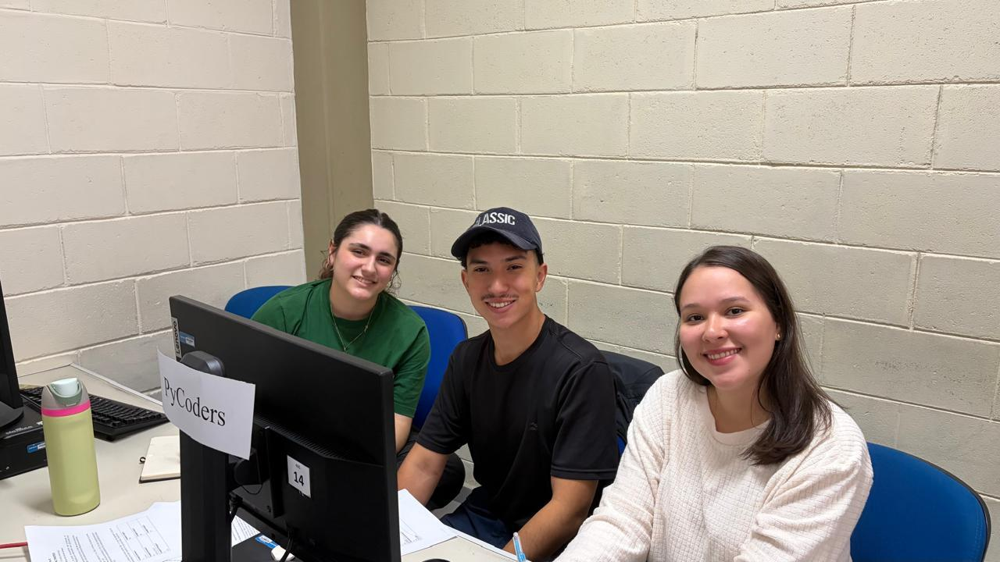
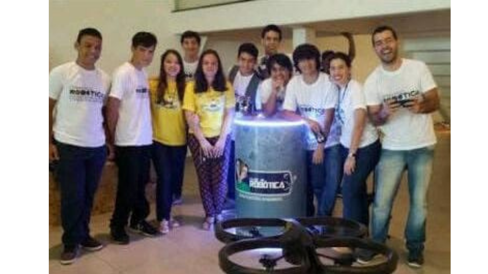
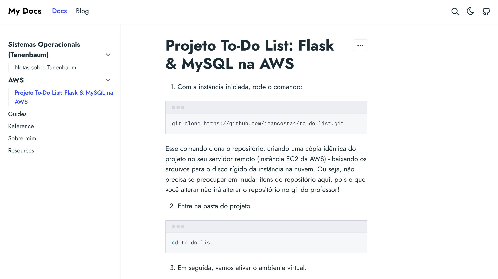

Pamela Iwabuchi.

Graduanda em Desenvolvimento de Software Multiplataforma pela FATEC - SJC e Farmacêutica pela Universidade do Norte - Manaus AM. Estive envolvida ao longo dos anos em projetos de pesquisa e iniciação científica como bolsista da FAPEAM no Institudo Nacional de Pesquisas da Amazônia (INPA). Atualmente em transição de carreira, tenho interesse em cybersecurity e desenvolvimento de sistemas, aprendendo constantemente sobre desenvolvimento web, banco de dados, python e lógica de programação.
Ao longo dos anos venho aprimorando a habilidade de resolução de problemas, comunicação, trabalho em equipe e raciocínio lógico. Tenho pensamento crítico e procuro estar sempre aprendendo e entendendo como as coisas funcionam. Conheça mais sobre mim e meus projetos aqui e não deixe de navegar pelo meu iwabuchi-labs!
PARTICIPAÇÃO EM EVENTOS
4º Science & Business Connection - PIT
AWS Woman in Cloud 2026
Maratona de Programação Interfatecs

Projetos
Clube de robótica FUCAPI (Fundação Centro de Análise, Pesquisa e Inovação Tecnológica)
Torneio de Robótica FIRST LEGO® LEAGUE - Trash Trek. Atuei na equipe de desenvolvimento de projeto de Reverse Vending Machine (RVM), com foco no incentivo à reciclagem. O protótipo reconhecia a entrada e a quantidade de latinhas e retornava créditos para o usuário. Nossa equipe também desenvolveu robôs para o torneio de robótica, dentre eles o robô que realiza a montagem do cubo mágico em menos de 1 minuto!
A Rede Globo visitou nosso projeto e nos intrevistou para contarmos mais detalhes:

Projeto Radar Cidadão
O projeto radar cidadão nasceu da necessidade de compartilhar dados públicos sobre Deputados Federais - que estão disponíveis, mas que não são de fácil entendimento - de forma simples e descomplicada para que o cidadão possa tomar sua decisão eleitoral com base em dados reais e compreensíveis.
Atuei no desenvolvimento do Índice Geral de Desempenho dos Deputados e na criação e inserção de dados da API da Câmara dos Deputados no banco de dados MySQL implantado em instância AWS.
Certificados
Python Essentials 1 - CISCO
Python: formação Básica - LINKEDIN
Introduction to Cybersecurity - CISCO
Fundamentos para Desenvolvimento de Software - Microsoft
Fundamentos para uma carreira em Cybersegurança - Microsoft
Noções básicas do Microsoft Azure AI: Introdução às Workloads e Aprendizado de máquina no Azure
Certificado EF SET Inglês 69/100 (C1 Proeficiência Eficaz)
Iniciação Científica no Instituto Nacional de Pesquisas da Amazônia (INPA) - Bolsista FAPEAM
AWS Academy Cloud Foundations - Em Andamento
Linguagens e Tecnologias
Artigos Publicados
iwabuchi-labs
O iwabuchi-labs é o lugar onde centralizo meu conhecimento e documento testes e tutoriais/atividades práticas derivadas dos meus estudos.
Meu objetivo é poder ajudar calouros que irão iniciar os estudos nos próximos semestres e treinar minha habilidade de escrita e ensino, além de ter uma espécie de biblioteca particular, onde posso sempre revisitar o que já aprendi e adicionar mais conhecimento conforme aprendo e testo.
Clique abaixo para acessar o iwabuchi-labs:
